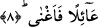

SENİ YETİM BULUP
BARINDIRMADI MI?
6. O, seni yetim bulup barındırmadı mı?
7. Şaşırmış bulup da yol göstermedi mi?
8. Seni fakir bulup zengin etmedi mi?
“O seni” anne ve babası ölmüş “yetim bulup da barındırmadı mı?” Bu cümle
“elem”in cevabıdır veya matuf cümledir. İbn Haluye’nin ifâdesi bu şekildedir. Buna
göre âyete mânâ verecek olursak şöyle deriz: Rabbın seni buldu. Buradaki bulmak
anlamına gelen “vücud” ilim yâni bilmek anlamınadır. Âyetteki “yetîm” kelimesi
“yecid” fiilinin ikinci mef’ûlüdür. Buna göre âyetin mânâsı: Allah seni yetim bilip de
sana sığınacak olduğun bir barınak vermedi mi? şeklindedir. “Âvâ” fiilinin kökü “eva”
şeklindedir. Anlamı filanca evine sığındı demektir. Bu kökten türeme “me’va” insanın
gece veya gündüz sığınmış olduğu her türlü mekanın adıdır.
Biz yukarda “yecid” fiilini “ilim” olarak tefsir ettik. Bu fiili “musadefe/tesadüf
etmek” anlamına almak da mümkündür. Bu takdirde “yetîmen” kelimesi fiilin
mef’ûlünden hal olur. Buna göre tesadüf mânâsı mecâzî bir mânâ olmuş olur. Bir başka
ifâdeyle hâlî ve vukuî olan ilim “musadefe” yâni tesadüf kabul edilmiş olur. Yoksa
tesadüfün Allah açısından düşünülmesi mümkün değildir.
Rivâyete göre Peygamber Efendimiz’in (s.a.) babası Abdulmuttalib oğlu Abdullah
Efendimiz ana karnında daha altı aylık iken vefat etmişti. Annesi ise Peygamber
Efendimiz sekiz yaşındayken vefat etmiştir. Onun bakımını amcası Ebû Talib üstlenmiş,
yeğenine şefkat göstermiş, yetiştirilmesini en güzel biçimde yapmıştır. İşte âyette sözü
edilen barındırılma bunlardan ibarettir.
Bazı âlimlerin ifâdesine göre Peygamber Efendimiz (s.a.) dünyaya geldiğinde Annesi
Amine ile dedesi Abdulmuttalib’in himayesinde idi. Altı yaşında annesi Amine vefat
etti. İki sene sonra sekiz yaşındayken dedesini kaybetti. Dedesi Abdulmuttalib ölmek
üzere iken torununu Ebû Talib’e bıraktı. Çünkü Peygamber Efendimiz’in babası
Abdullah ile ana-baba bir öz kardeş idiler. Peygamber Efendimiz’in peygamber
oluncaya kadar bakım ve himayesini amcası Ebû Talip üstlenmiş ve uzun bir süre
Peygamber Efendimiz’e yardım elini uzatmıştır. Ebû Talip vefat edince müşrikler o
zamana kadar görülmemiş bir biçimde Peygamber Efendimiz’e (s.a.) eziyet etmeye
başladılar. Peygamberimiz (s.a.) “küçükken yetimdim, büyüdüm garip oldum” derdi.